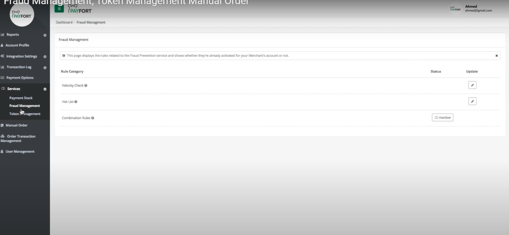

PayFORT Fraud Protection Service
These days it is very common to get lured into various scams and expose any application and device to the scamsters. The scamsters use various novel techniques such as phishing, etc to scam. PayFORT helps to protect against online frauds. This service protects you being lured into a scam over the Internet, and as a result minimizes chargebacks.
It's light fraud check rules can be enabled on the merchant account if the merchant business is not that risky or have complex fraud rules. Its limited number of fraud rules can be permitted to monitor the merchant transactions online during the transaction processing.
PayFORT fraud management consists of two layers first one is the basic fraud management service and another is ACI ReD Fraud Service. This section covers fraud management service API and basic fraud management through the back office.
How it Works?
The PayFORT service helps your application or site to detect customer's IP Geolocation and helps track the payment transactions.
Placeholder: Explain the working process for the PayFORT fraud protection service.
Integration Flow
Workflow Diagram required here to explain the Integration flow as well.
PayFORT Fraud prevention services Request
The Request
Placeholder: Provide a sample code for sending the request.
Request Parameters
| ATTRIBUTES | Description |
|---|---|
| customer_ip( Alphanumeric Mandatory max: 45) | Refers to the customer’s IP Geolocation. *We support IPv4 and IPv6 as shown in the example below. Example: 192.178.1.10 Example: IPv4 → 192.178.1.10 IPv6 → 2001:0db8:3042:0002:5a55:caff:fef6:bdbf Special characters: . : |
PayFORT Fraud prevention services Response
PayFORT will send back the customer_ip details in the response
| ATTRIBUTES | Description |
|---|---|
| customer_ip( Alphanumeric ) | Refers to the customer’s IP Geolocation. *We support IPv4 and IPv6 as shown in the example below. Example: 192.178.1.10 Example: IPv4 → 192.178.1.10 IPv6 → 2001:0db8:3042:0002:5a55:caff:fef6:bdbf Special characters: . : |
Fraud Management (Back Office)
You can also manage fraud management service from the Back Office portal.
You can follow the steps mentioned in this section to configure fraud management services
- On the left hand side under the services menu you will find fraud management screen
- Once you click on fraud management screen, a window as shown below will open.
- You can configure Velocity check, hotlist, combination rules.

You can also check out the video tutorial below
Go to Full API
Check out our full API by visiting this link
Need further help?
Thanks for using PayFort.com. If you need any help or support, then message our support team at support@payfort.com.